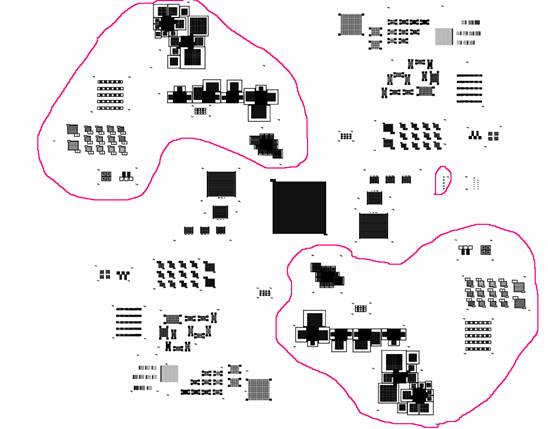
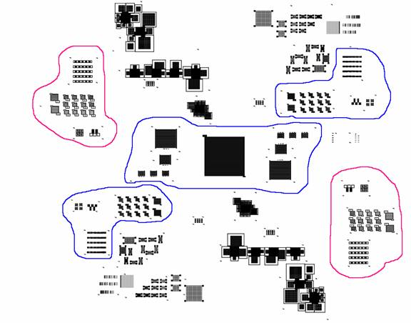
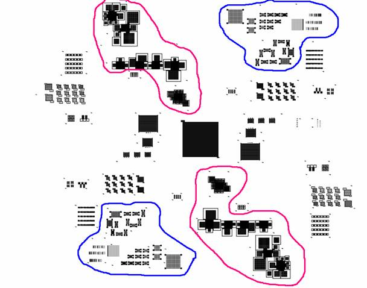
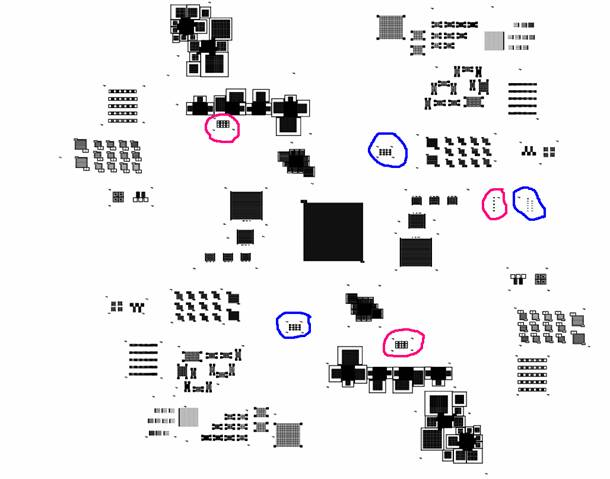

RIT Mask (v7.0) Submitted 9/25/04
RIT Mask (v7.0) Submitted 9/25/04
Multipurpose 2 micron 4x4" mask for electrode fabrication (positive and negative).
L-Edit file
Zoom-in on mask pattern - negative pattern is outlined in red.

Interdigitated electrodes with contact pads, variable spacing and electrode width. (negative red, positive blue)

Conductive mesh variable spacing, electrode width 2-6 um. (negative red, positive blue)

Test structures resistivity/heating and resolution (negative red, positive blue)

Majority of the pattern is designed around a mid-point symmetry. This allows to temporary mask unwanted pattern (with aluminum foil !),
and repeating the exposure after rotating the wafer.